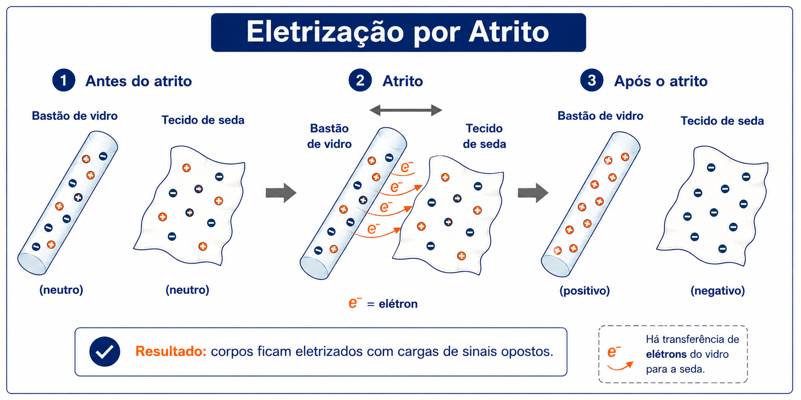

3º Ano | Aula 01: Carga Elétrica e Processos de Eletrização
📚 Resumo
A Carga Elétrica é uma propriedade intrínseca das partículas fundamentais (prótons e elétrons). A quantidade de carga elétrica ($Q$) é quantizada em múltiplos da carga elementar ($e \approx 1,6 \times 10^{-19}\text{ C}$), segundo a relação $Q = n \cdot e$.
Existem três processos fundamentais de eletrização: Atrito (corpos de materiais diferentes adquirem cargas de sinais opostos), Contato (corpos condutores adquirem cargas do mesmo sinal) e Indução (eletrização à distância com o auxílio do aterramento, resultando em cargas de sinais opostos).
📖 Carga Elétrica e Eletrização
1. Carga Elétrica Elementar e Quantização
Um corpo eletricamente neutro possui número igual de prótons e elétrons. Um corpo torna-se eletrizado quando ganha ou perde elétrons (os prótons permanecem fixos no núcleo atômico):
Carga positiva: Falta de elétrons ($n_p > n_e$).
Carga negativa: Excesso de elétrons ($n_e > n_p$).
A quantidade total de carga ($Q$) é dada por:
$$Q = n \cdot e$$
Onde $n$ é o número de elétrons transferidos e $e = 1,6 \times 10^{-19}\text{ C}$ é a carga elementar.
2. Princípios da Eletrostática
Princípio das Atração e Repulsão: Cargas elétricas de mesmo sinal se repelem e de sinais contrários se atraem.
Princípio da Conservação da Carga Elétrica: Num sistema eletricamente isolado, a soma algébrica das cargas elétricas permanece constante ($Q_{\text{inicial}} = Q_{\text{final}}$).
3. Processos de Eletrização
1. Eletrização por Atrito: Dois corpos neutros de materiais distintos são friccionados. Um cede elétrons para o outro.
• Resultado: Corpos ficam com cargas de sinais opostos e módulos iguais.

Figura 1: Processo de Eletrização por Atrito.
2. Eletrização por Contato: Dois condutores (pelo menos um previamente eletrizado) são colocados em contato. Há migração de elétrons até o equilíbrio eletrostático.
• Resultado: Corpos ficam com cargas do mesmo sinal. Para esferas idênticas, a carga final é a média aritmética: $Q' = \frac{Q_A + Q_B}{2}$.
Figura 2: Processo de Eletrização por Contato.
3. Eletrização por Indução: Um corpo eletrizado (indutor) aproxima-se de um condutor neutro (induzido) sem tocá-lo, promovendo a separação local de cargas (polarização). Conecta-se o induzido à Terra (aterramento) e, em seguida, desfaz-se a ligação antes de afastar o indutor.
• Resultado: O induzido adquire carga de sinal oposto ao do indutor.
Figura 3: Processo de Eletrização por Indução.
💡 Física em Ação
🎨 Pintura Eletrostática Automotiva
A tinta em pó é eletrizada ao sair da pistola de pintura e atrai-se fortemente pela lataria do carro (que possui carga oposta ou está aterrada), resultando em um acabamento uniforme e sem desperdício.
⚡ Raios e Para-raios
As nuvens de tempestade eletrizam-se por atrito devido à movimentação de cristais de gelo e gotas de água. A enorme carga na base da nuvem induz uma carga oposta no solo, gerando a descarga atmosférica (raio).
✅ 5 Questões Resolvidas (R 1 a 5)
R 1: Cálculo do Número de Elétrons
Enunciado: Um corpo condutor inicialmente neutro perde $5 \times 10^{13}$ elétrons ao ser atritado. Sabendo que $e = 1,6 \times 10^{-19}\text{ C}$, determine o sinal e o valor da carga elétrica adquirida por esse corpo.
Resolução:
Como o corpo perdeu elétrons, sua carga final será positiva.
$Q = n \cdot e = (5 \times 10^{13}) \cdot (1,6 \times 10^{-19}) = 8,0 \times 10^{-6}\text{ C} = \mathbf{+8,0\ \mu\text{C}}$.
R 2: Contato entre Esferas Idênticas
Enunciado: Duas esferas metálicas idênticas $A$ e $B$ possuem cargas iniciais $Q_A = +12\ \mu\text{C}$ e $Q_B = -4\ \mu\text{C}$. Elas são colocadas em contato e, em seguida, separadas. Qual a carga final de cada esfera?
Resolução:
Como as esferas são idênticas, a carga divide-se igualmente:
$Q' = \frac{Q_A + Q_B}{2} = \frac{(+12) + (-4)}{2} = \frac{8}{2} = \mathbf{+4\ \mu\text{C}}$ para cada esfera.
R 3: Sequência de Contatos
Enunciado: Três esferas condutoras idênticas $A$, $B$ e $C$ possuem cargas $Q_A = +8\text{ C}$, $Q_B = 0$ (neutra) e $Q_C = 0$ (neutra). Se $A$ encosta primeiro em $B$ e depois em $C$, qual a carga final de $A$?
Resolução:
1. Contato $A$ com $B$:
$Q'_{A1} = Q'_B = \frac{+8 + 0}{2} = +4\text{ C}$.
2. Contato $A$ com $C$ (usando a nova carga de $A$):
$Q''_{A} = Q'_C = \frac{+4 + 0}{2} = \mathbf{+2\text{ C}}$.
R 4: Sinal na Eletrização por Indução
Enunciado: Um bastão de vidro eletrizado positivamente é aproximado de uma esfera condutora neutra aterrada. Em seguida, o aterramento é desfeito e o bastão é afastado. Qual o sinal da carga adquirida pela esfera?
Resolução:
O bastão positivo atrai elétrons da Terra para a esfera induzida. Ao desfazer o aterramento, esses elétrons ficam retidos no corpo. Portanto, a esfera fica eletrizada com carga negativa (sinal oposto ao do indutor).
R 5: Conservação da Carga Elétrica
Enunciado: Em um sistema eletricamente isolado composto por três corpos, as cargas iniciais são $Q_1 = +5\text{ C}$, $Q_2 = -2\text{ C}$ e $Q_3 = +1\text{ C}$. Após várias trocas de carga, observa-se que $Q'_1 = +2\text{ C}$ e $Q'_2 = +4\text{ C}$. Determine o valor da carga $Q'_3$.
Enunciado: Um corpo possui uma carga elétrica $Q = -3,2\ \mu\text{C}$. Quantos elétrons esse corpo tem em excesso? ($e = 1,6 \times 10^{-19}\text{ C}$).
Resolução: $Q = n \cdot e \implies 3,2 \times 10^{-6} = n \cdot (1,6 \times 10^{-19}) \implies n = \frac{3,2 \times 10^{-6}}{1,6 \times 10^{-19}} = \mathbf{2,0 \times 10^{13}\text{ elétrons}}$.
P 7: Atrito entre Ambar e Lã
Enunciado: Um bastão de âmbar neutro é atritado com um pedaço de tecido de lã neutro. Se a lã adquire carga $+Q$, qual é a carga adquirida pelo âmbar?
Resolução: Pela Conservação da Carga e Eletrização por Atrito, os corpos adquirem cargas de módulos iguais e sinais opostos. O âmbar adquire carga $-Q$.
P 8: Atração de Corpos Neutros
Enunciado: Explique por que um bastão eletrizado consegue atrair pequenos pedaços de papel neutros.
Resolução: Ocorre o fenômeno da polarização (indução em isolantes). O bastão eletrizado atrai as cargas de sinal oposto do papel para mais perto de si e repele as de mesmo sinal, gerando uma força resultante de atração eletrostática.
P 9: Contato Triplo Simultâneo
Enunciado: Três esferas idênticas $A$, $B$ e $C$ possuem cargas $Q_A = +10\text{ C}$, $Q_B = -2\text{ C}$ e $Q_C = +1\text{ C}$. Se as três forem colocadas em contato SIMULTANEAMENTE, qual será a carga final de cada uma?
Resolução: No contato simultâneo entre 3 esferas idênticas, divide-se a soma por 3:
$Q' = \frac{Q_A + Q_B + Q_C}{3} = \frac{10 - 2 + 1}{3} = \frac{9}{3} = \mathbf{+3\text{ C}}$ para cada esfera.
P 10: Impossibilidade de Carga Fracionada
Enunciado: É possível um corpo apresentar uma carga de valor $Q = 2,4 \times 10^{-19}\text{ C}$? Justifique com base no conceito de quantização.
Resolução: Não. Calculando $n = \frac{Q}{e} = \frac{2,4 \times 10^{-19}}{1,6 \times 10^{-19}} = 1,5$. Como $n$ precisa ser obrigatoriamente um número inteiro de elétrons, a carga informada é impossível na prática.
🎓 TESTES (T 11 a 15)
🚧 EM BREVE!
Questões de vestibulares serão disponibilizadas em breve.